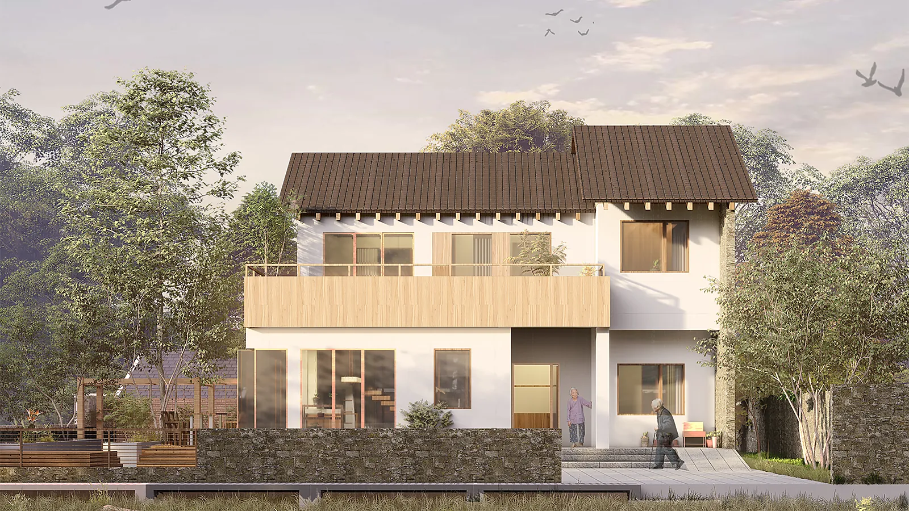
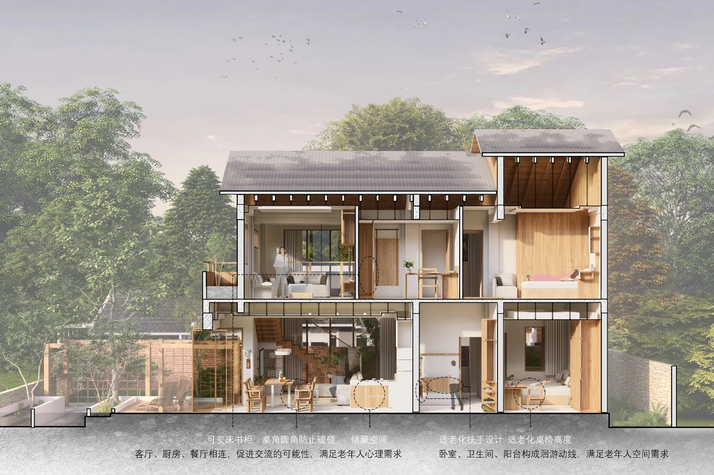
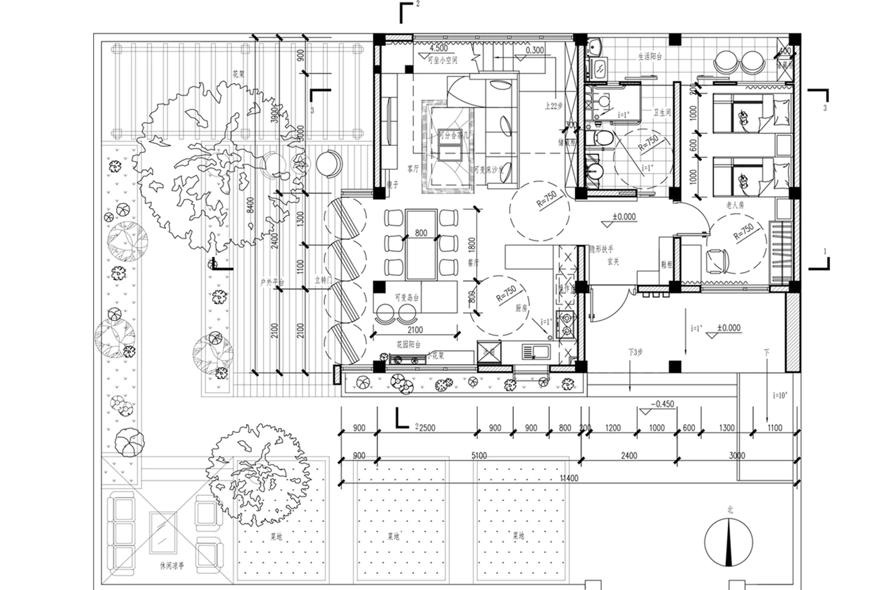
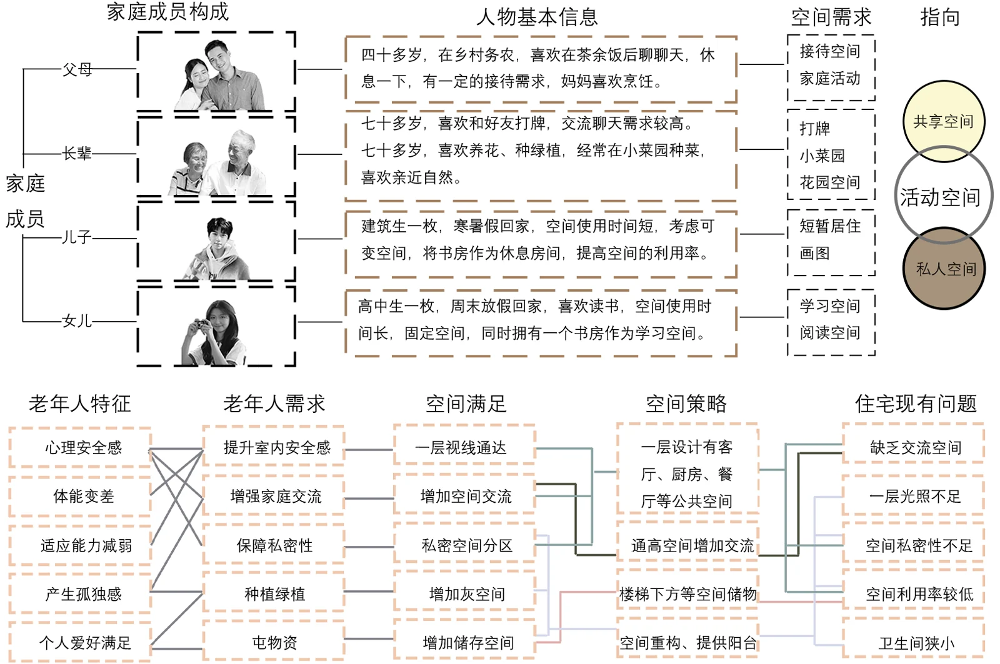
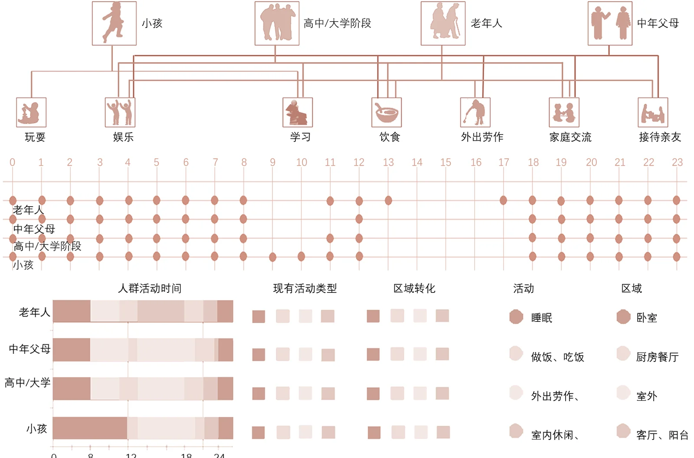
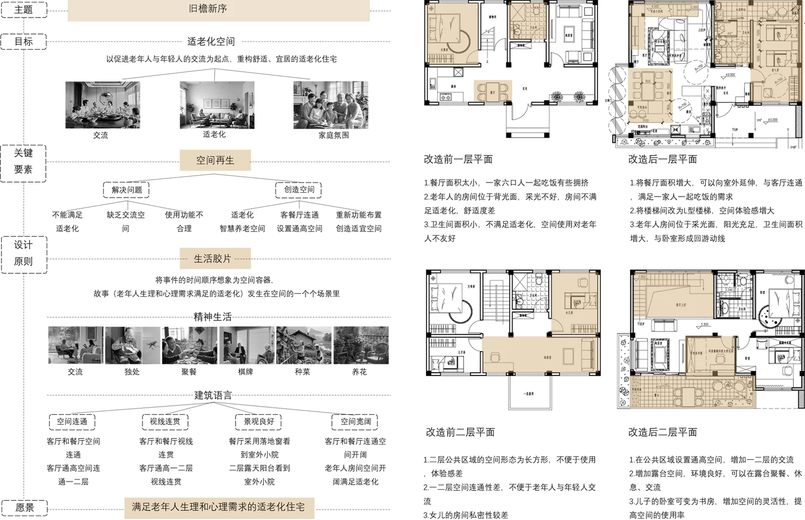
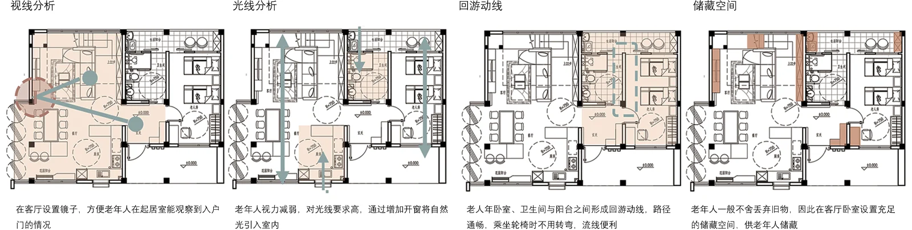
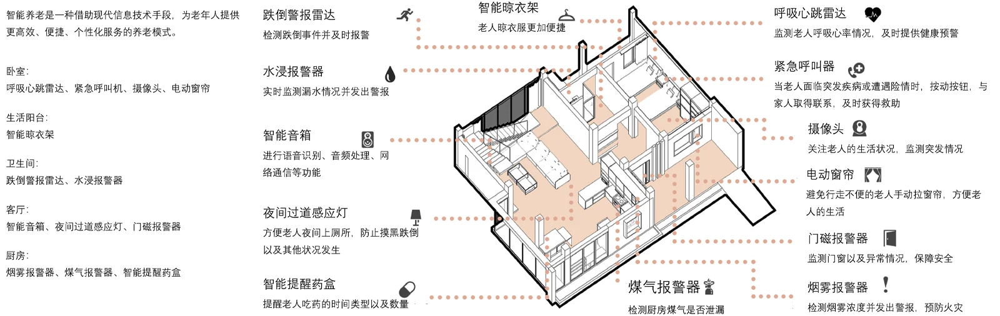
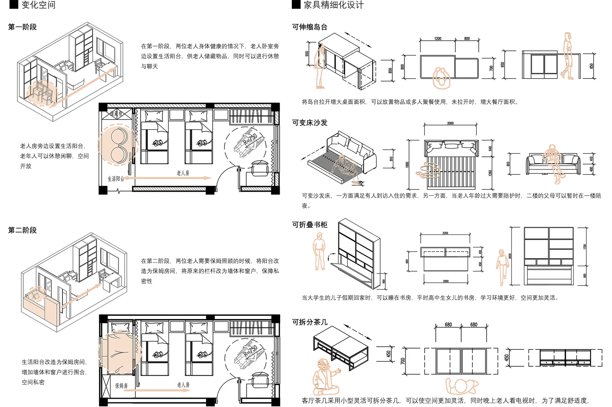
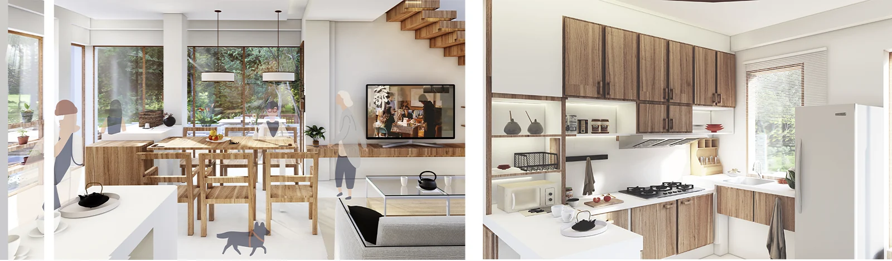

04室内精细化设计
旧檐新序
New Order Beneath Old Eaves
作为生活胶片的乡村适老化空间重构
- 地点
- 云南省曲靖市马龙区
- 面积
- 122.7 ㎡
- 年份
- 2024.12
- 团队
- 杨官运、王一凡
- 来源
- 大三上课程作业
- 指导
- 田琦
- 参与
- 前期分析、方案构思、3D 建模、部分工程图、渲染、后期处理
- 获奖
- 2024 年首届居家适老化改造设计创新大赛 入围奖
122.7 平方米，一家三代六口人。把老人一天的生活切成胶片，再按帧重组空间。
设计命题
西南农村住宅的典型困境：代际合住却缺乏分区，老年人的空间不适老，青年假期返乡又局促。这不是一栋房子的问题，而是三代人如何在有限面积里共处。设计对象是云南曲靖马龙区一栋两层农村住宅，建筑面积只有 122.7 平方米。

核心概念：生活胶片
把老人一天的生活序列想象成空间的胶片帧——晨起、用餐、会客、休憩、种菜、养花、如厕、沐浴，每一帧都是一个场景。所以这不是一次常规的适老化改造，而是围绕老人的生活轨迹重新组织空间：动线更短、光线更足、视线更通透、交流更自然。
设计关键词：洄游动线 · 通高空间 · 弹性家具 · 智能养老
客厅与餐厅连通，视线连贯，落地窗外就是小院；在满足代际分隔的前提下，创造更多交流与共享的可能。

家庭结构与现状矛盾
三代六口：年逾五旬的务农父母、七十余岁的祖父母（日常养花种菜）、建筑学在读的儿子、高中在读的女儿。现状有四处矛盾：一层餐厅容不下六人聚餐；老人房位于背光面，采光差；卫生间狭小，不满足适老需求；二层公共空间连通性差，代际交流不足。


改造策略
一层：餐厅向北扩并与客厅连通，楼梯改为 L 型，老人房移到采光面、与扩大后的卫生间形成洄游；二层：公共区域做通高，露台改为户外餐聚，儿子的房间可变书房，女儿的房间加强私密。

适老化专项设计
落在四件事上：视线——客厅设镜面，老人起坐时能看到入户动静；光线——加开窗，把自然光引进室内；洄游——老人卧室、卫生间与阳台之间形成回游路线，坐轮椅也不用掉头；储藏——老人舍不得丢的旧物，在客厅与卧室留足存放的位置。

智能养老系统
全屋 12 项设备覆盖卧室、生活阳台、卫生间、客厅与厨房：呼吸心跳雷达、紧急呼叫、摄像头、电动窗帘、跌倒警报、水浸报警、智能晾衣架、夜间过道感应灯、提醒药盒、煤气与烟雾报警、门磁。技术本身不新，但每一项都对应老人在家的一个具体动作。

弹性变化与家具精细化
空间要经得起家庭生命周期的变化：老人身体尚好时，阳台是休憩养花的地方；需要保姆照护时，阳台可以改成保姆房，加一道围合就解决私密性。家具同样可变——可伸缩岛台、可变床沙发、可折叠书柜、可拆分茶几，让 122.7 平方米具备最大的使用弹性。

